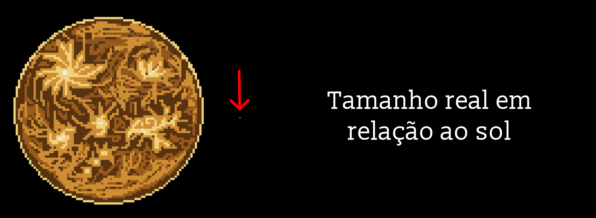

Terra: o planeta azul
A Terra é o terceiro planeta a partir do Sol e o único lugar do Universo onde sabemos que existe vida. É também o único planeta do Sistema Solar que não leva nome de um deus: "Terra" vem do latim e significa simplesmente "chão" ou "solo". Vista do espaço, porém, ela é mais azul do que marrom, porque cerca de 71% da sua superfície é coberta por água.
Na distância certa
A Terra fica a cerca de 150 milhões de km do Sol, dentro da chamada zona habitável: nem tão perto que a água ferva, como em Vênus, nem tão longe que ela congele de vez. É por isso que ela é o único planeta com oceanos de água líquida na superfície.
Um dia de 24 horas e um ano de 365 dias
A Terra gira em torno de si mesma em cerca de 24 horas e dá a volta no Sol em 365 dias e 6 horas. Essas 6 horas que sobram se acumulam, e a cada quatro anos viram um dia extra: o 29 de fevereiro dos anos bissextos. Enquanto isso, viajamos ao redor do Sol a cerca de 107 mil km/h sem sentir nada.

Por que existem estações do ano
O eixo da Terra é inclinado em cerca de 23 graus. Por isso, durante o ano, ora o hemisfério norte, ora o hemisfério sul recebe a luz do Sol mais diretamente. Quando é verão no Brasil, é inverno na Europa.
Um escudo invisível
No centro da Terra existe um núcleo de ferro, parte dele derretido e em movimento, que gera um campo magnético ao redor do planeta. Ele funciona como um escudo contra as partículas lançadas pelo Sol, e quando algumas delas escapam perto dos polos, criam as auroras, aquelas luzes coloridas no céu. Esse núcleo também faz da Terra o planeta mais denso do Sistema Solar.
Um chão que se move
A superfície da Terra é dividida em placas gigantes que se movem alguns centímetros por ano, mais ou menos a velocidade em que as unhas crescem. É esse movimento que forma montanhas, causa terremotos e, há milhões de anos, separou a América do Sul da África, que antes se encaixavam como peças de quebra-cabeça. A Terra é o único planeta conhecido onde isso acontece.
A Lua, a grande companheira
A hipótese mais aceita é que a Lua nasceu há cerca de 4,5 bilhões de anos, quando um corpo do tamanho de Marte colidiu com a Terra jovem e lançou pedaços ao espaço. Hoje ela provoca as marés e ajuda a manter a inclinação da Terra estável, o que deixa o clima mais equilibrado. Ela também freia a rotação do planeta aos poucos: na época dos dinossauros, o dia era um pouco mais curto do que hoje.
Um pálido ponto azul
Em 1990, a sonda Voyager 1, a cerca de 6 bilhões de km de distância, virou sua câmera para trás e fotografou a Terra. Na imagem, ela aparece como um pontinho quase invisível num raio de luz. A foto ficou famosa como "Pálido Ponto Azul" e mostra como nosso planeta é pequeno diante da imensidão do espaço.
Pequena no Universo, mas única até onde sabemos, a Terra é o único lar que conhecemos e o planeta de que mais precisamos cuidar.